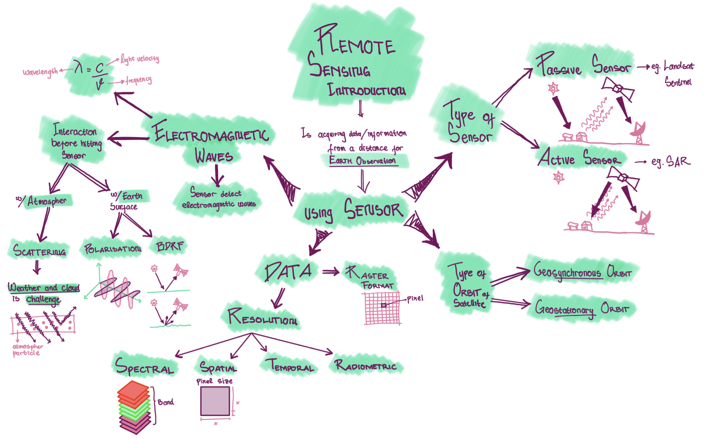
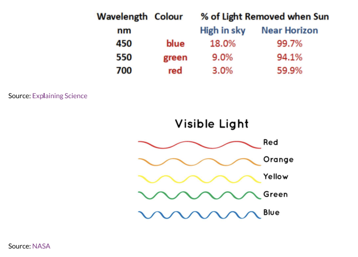

week 01 - Remote Sensing Introduction
Summary
Remote sensing is acquiring data or information from a distance. In this module, context we use remote sensing for Earth Observation (EO). This can be done by using sensor mounted on satelite.
In this week we will talk general topic about sensor and satellite on on earth observation. It can be seen in the mind map that there will be 4 subtopics to make us easier understanding Sensor, which are:
Types of Sensor
Passive Sensor
Active Sensor
Electromagnetic waves or radiation (EMR)
EMR interaction with atmosphere before hitting sensor
EMR interaction with earth surface before hitting sensor
Type or satellite orbit
Geosynchronous Orbit
Geostationary Orbit
Data produced by sensor
Raster Data Format
Resolution
Spectral
Spatial
Temporal
Radiometric
Check the mind map to understand the outline of this week’s topic

Types of Sensor
Passive Sensor
- Use electromagnetic waves from sun-ray as source of energy.
- Detect reflected energy from the sun that has different wavelength to detect different colour spectrum
- Such as:
- sentinel
- landsat

Active Sensor
- Have an energy source for Illumination
- Actively emits electromagnetics wave and then wait to rceive
- Such as:
- Synthetic-aperture Radar (SAR),
- X-ray,
- LiDAR

Electro Magnetic waves
- is waves that have both eletric and magentic field, produce by vibration of particles
- EM waves move in vacuum
- Perpendicular electric and magnetic field
- different wavelength causes different colour spectrum. That’s why we can see colourful image

Terms
- Electromagnetic radiation (EMR) = Waves of an electromagnetic field, travel through space and carry radiant energy
- Radiant Energy = energy carried by EMR Waves
- Radian flux = Energy per unit of time
- Exitance emittance (per unit time
- flux) = energy leaving a surface per unit area per unit time - Flux = time
Electromagnetric Radiaton (EMR) interaction
- Before hitting hitting the sensor, energy from electromagnetic radiation will interacting with:
- atmosphere
- scattered by atmosphere particle
- earth’s surface
- absorbed
- transmitted
- atmosphere
Atmospheric Scattering
Electromagnetic waves are scatters by particles on the atmosphere

Smaller wavelengths scatter easier
Blue has the smallest wavelength 
type of scattering:
- Rayleigh is when particles are very small compared to the wavelength.
- eg: sky looks blue because sunray scattered by particles. in sunset or sunrise is much more atmosphere to pass throught so more scattered. When sun’s angle change the blue light scatter does not reach our eyes as the distance is increased, so longer wavelength like red and orange reach us
- Mie is when particles are same size compared to the wavelength
- Non Selective is when particles are much larger compared to the wavelength
- Rayleigh is when particles are very small compared to the wavelength.
drawback of passive sensor is that it could not pass through cloud
Bidirectional Documented Surface Interaction (BDRF)
- happens because sensor and illumination (sun) angles can change.
- It can cause
- backscattering (left): sun behind the sensor, bright region at sensor and sun side
- forwards scattering (right): sun opposite satelite, shadow region at sensor side
“There are many interaction that influence the data being created because it’s not merely say that energy from sun is reflected by earth to sensor (but there are may factor such as scattering and interaction with surface)”
Types of orbit
- Geosynchronous Orbit (GSO)
- satelite matches the earth’s rotation, usually for sensor
- Geostationary Orbit
- satelite holds same position, usually only for communication
Data
Raster Format
- Satellite sensor produces raster imagery data. Raster image is a graphic repesented as a rectangular matrix or grid of square pixels.

Four Data Resolution
Spatial
- Spatial resolution is the size of the raster grid per pixel. The smaller the grid means the higher the resolution be so the clearer the image be
- smallest grid is 10cmTemporal
- Temporal resolution is showing how often the data being updatedRadiometric
- **Radiometric** is identified differences in light or reflectance, in practice this is the range of possible values. or the ability od a sensor to identify and show small difference in energy.
- The higher the bit, the more sensitive and the more information
- however, the lower the radiometric resolution, the higher possibility to differentiate featuresSpectral
- this concept similar to pixel concept in digital camera where different colour (called band) is stacked together so it makes a new colour combination.  source: The hype in spectral imaging | Spectroscopy Europe/World
source: The hype in spectral imaging | Spectroscopy Europe/World
- spectral resolution based on number of bands being observed